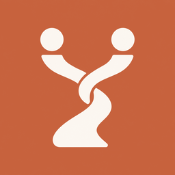

バウパス
自分との約束も、誰かとの約束も。
App Storeで公開準備中です
決めたのに、忘れてしまう。伝えたのに、そのままになっている。
約束は、交わした瞬間よりも、その後のほうが難しいものです。
VowPathは、小さな誓いを書き留めて、忘れずに歩いていくためのiOSアプリです。 自分との約束も、誰かとの約束も、同じ場所に置いておけます。 アカウント登録なしで始められ、大切な人と共有したくなったときだけ登録すれば大丈夫です。
共有しない約束は端末の中だけに保存され、誰にも見られません。続けたい習慣や、自分との決めごとに。
書いた約束は「確定する」まで相手に見えません。相手の約束には「伝えたいこと」を書き添えられます。共有はいつでも解除できます。
頭の中にあることをそのまま書き留めたり、いつかの願いごとを記録したり。どちらも端末内にのみ保存されます。
重要マークを付けた約束をホーム画面に表示できます。アプリを開かなくても、大切な約束が目に入ります。
好きな時刻を選んで、毎日そっとお知らせします。思い出すきっかけを、生活の中に。
アカウント登録なしで、無料のままお使いいただけます。作成できる件数に上限があり、VowPath Plusで解除できます。
| プラン | 料金 | 内容 |
|---|---|---|
| 無料 | ¥0 | 共有できる約束 1件、自分だけの約束 5件、思考 30件、叶えたいこと 5件まで。ウィジェットとリマインダーに制限はありません。 |
| VowPath Plus | 月額 ¥240 年額 ¥2,400 |
上記の件数がすべて無制限に。あわせて、メモの書き出し・読み込みと、広告の非表示。 |
| 広告を削除 | ¥480（買い切り） | 広告の非表示のみ。件数の上限は変わりません。 |
上限はアカウントごとに適用されます。パートナーと二人とも上限をなくすには、それぞれのご登録が必要です。 解約された場合も、保存済みの内容が削除されることはありません。新しく追加できなくなるだけで、これまでの内容はそのままご覧いただけます。